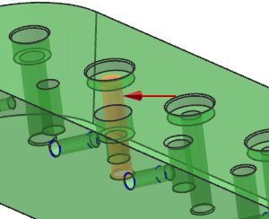
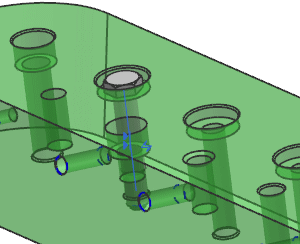
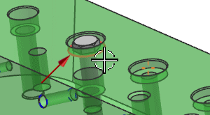
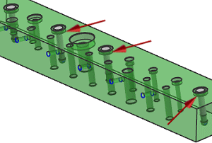

Add multiple components
You will use Repeat after Add with Positioning – Select Origin to add multiple components.
-
In the Reuse Library Navigator, select Part Families and expand the Member Select group.
-
Drag the Hex Fit Bolt to one of the holes.

-
Release the mouse button to place the bolt.

-
In the Placement group, set the following:
-
Use Inferred Constraints =

-
Positioning = Select Origin
-
Multiple Add = Repeat after Add
-
-
Click OK.
-
In the Point dialog box, from the Type list, select Arc/Ellipse/Sphere Center.
This will be used to establish the origin point for the first bolt.
-
Select the circular face as shown.

-
Select three (3) additional holes in the same way, as shown.

An additional bolt is created each time you select another hole.
-
After the last hole is selected, in the Point dialog box, click Cancel.
You have completed adding parts from Part Families in the Reuse Library to the assembly, using add multiple components.
-
Close all parts without saving.